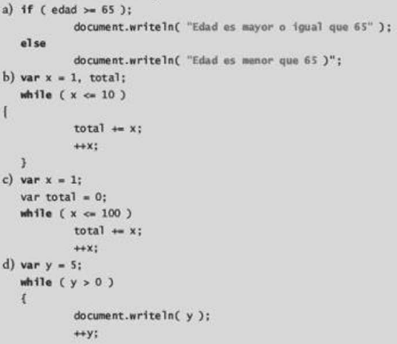

Identifique y corrija los errores en cada uno de los siguientes segmentos de código.
a) Errores: el ; despues del if está mal, en su lugar deben ir las llaves {} y de igual forma el else necesita las llaves de apertura y cerradura .
b) Errores: El corchete ([) despues de la condición del while no es correcto, en su lugar debería ir la llave que abre ( { ) .
c) Errores: El while necesita las llaves de apertura y cerradura ( {} ).
d) Errores: Falta la llave que cierra al ciclo while.